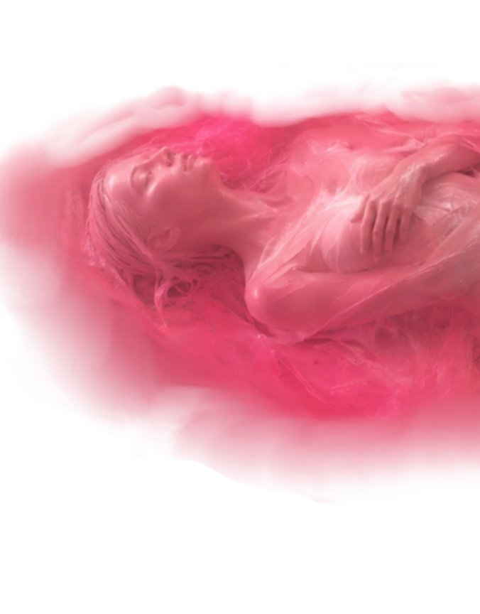
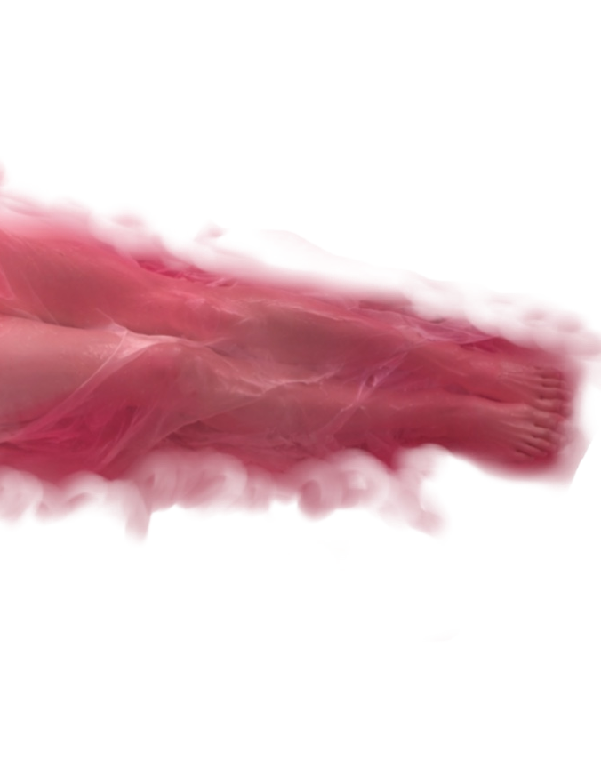
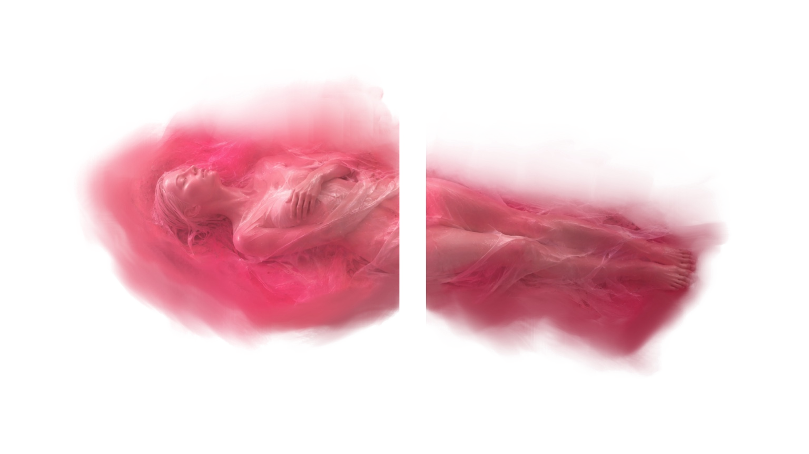

Suche das Diptychon …
Die Gedanken sind frei



src="./Figur_Die_Gedanken_sind_frei_AR.png"
position="0 0 0.1"
rotation="0 0 0"
width="1"
height="0.5625"
material="shader: flat; transparent: true; opacity: 1; side: double">